子育て支援
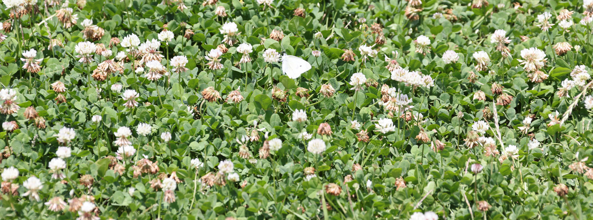
園では、週4回(月・火・木・金曜日)の給食。週1回(水曜日)のお弁当を実施しています。
給食は、隣接する保育園ですべて調理し、あたたかい状態で給食を提供しています。
※2号認定の希望者には、お弁当日と土曜日に箱入り給食弁当を提供しています。
給 食
◆ 身体にやさしい食材を・・
◆ 苦手な野菜も食べやすいように・・
◆ 食べることが好きになってもらいたい・・
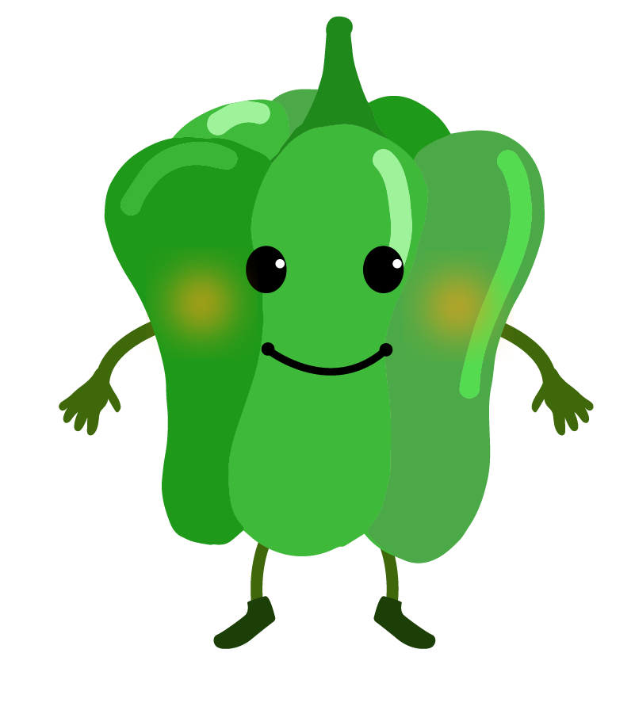
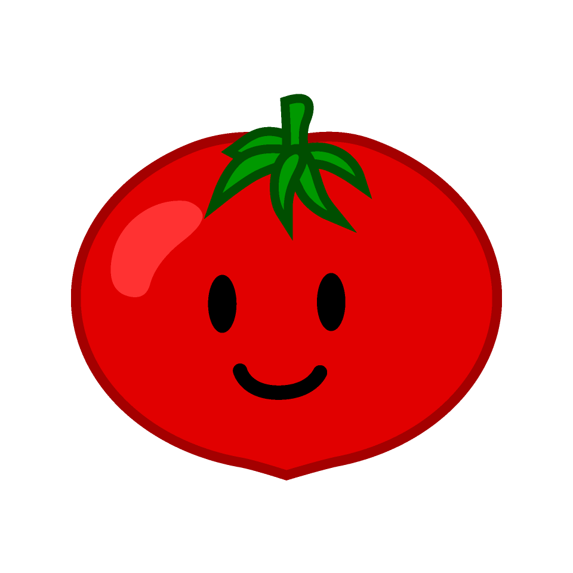
合わせる食材や調味料など工夫されたメニューとなっています。
はじめは、給食が苦手な子もたくさんいますが、無理せず少しずつ食べられるようにしていきます。
食べることが好きになってくると、おかわりをして食べる子もたくさんいます。
※ アレルギーがある子どもに関しては、事前に面談を行い一人ひとりに合わせたメニューを提供しています。
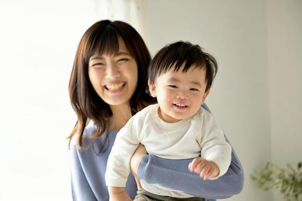
 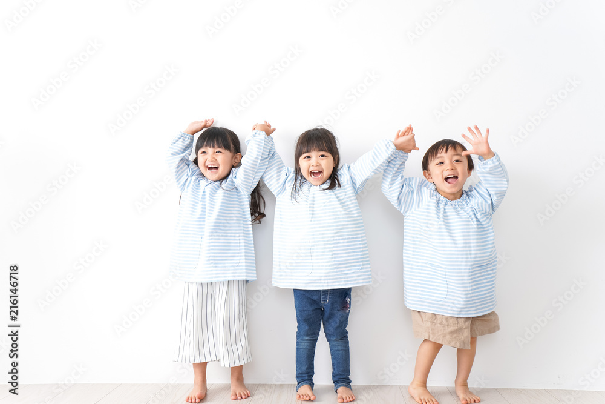
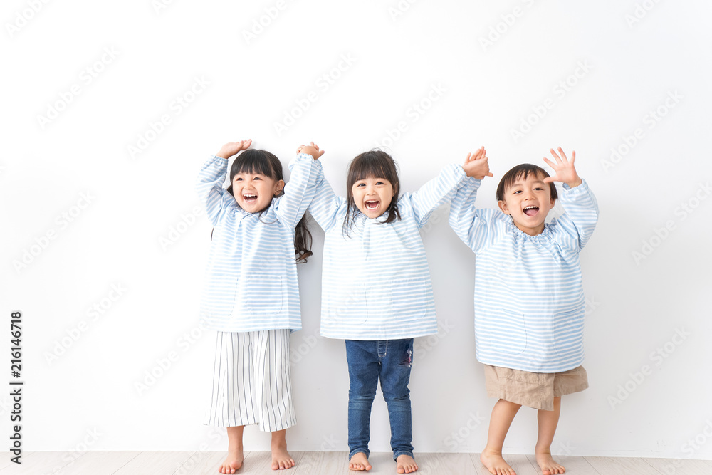
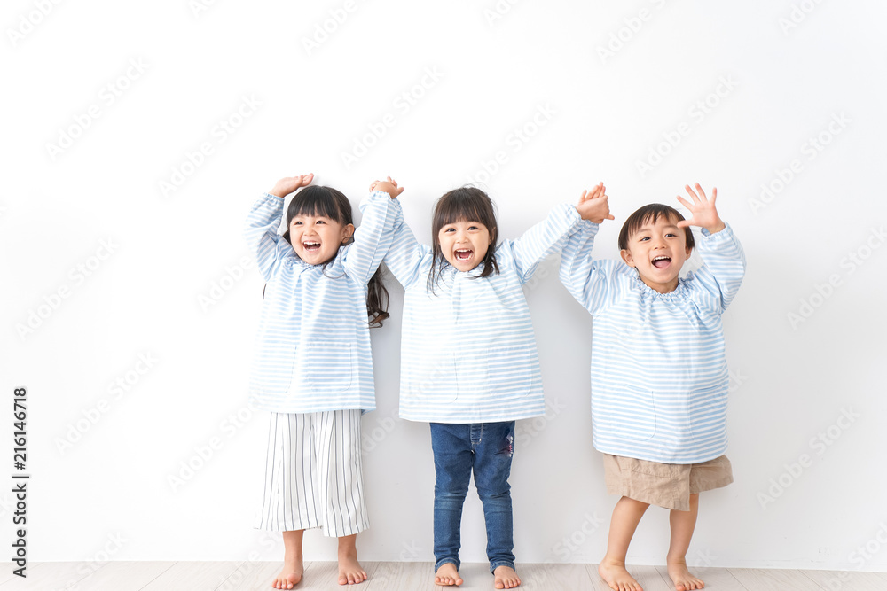
野菜を育てる
◆ 育てる楽しさや趣味
◆ 収穫の喜びを味わう
◆ とれたての食物のおいしさを感じる
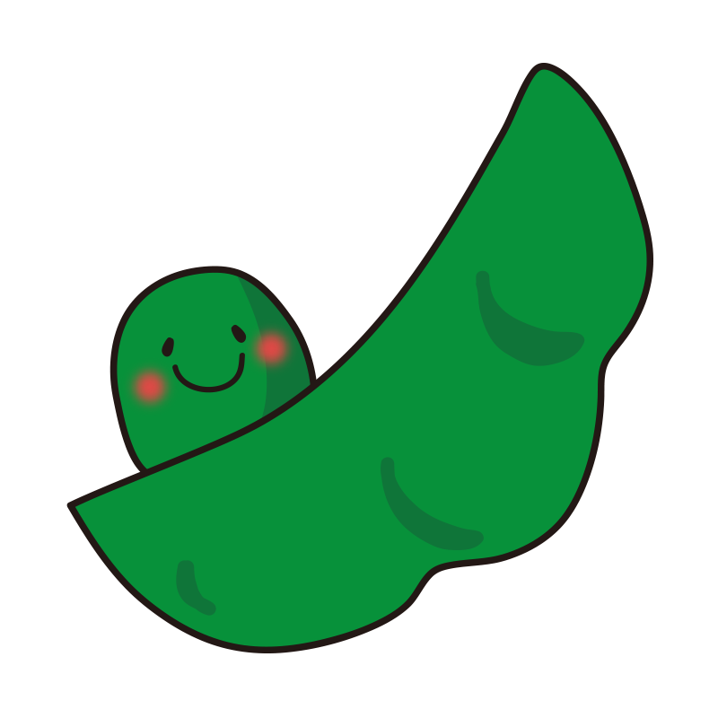
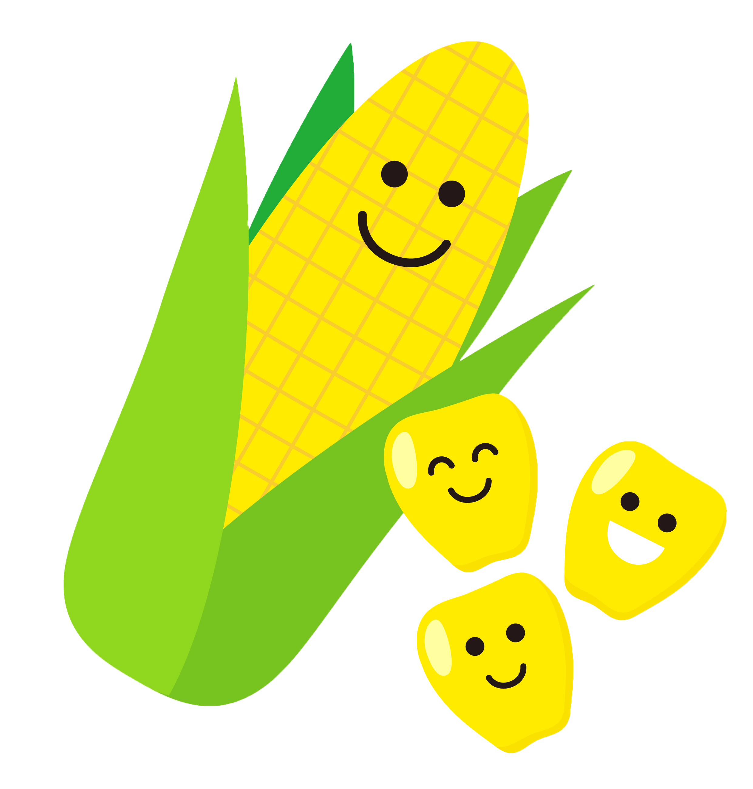
とうもろこし・枝豆・大根・きゅうり・こどもピーマンなどなど 季節に合わせて子どもたちと一緒に水やりなどもしながら、様々な野菜を育てています。
さくらんぼ・びわ・ぶどう・かき・キンカンなど 園内には様々な果物の木もあります。毎年たくさんの実をつけるので、子どもたちと一緒に収穫をして食べています。
食堂との連携
◆ 自分たちで作る楽しさ・喜び
◆ 食への興味・関心
◆ 作り手との距離感を大切に
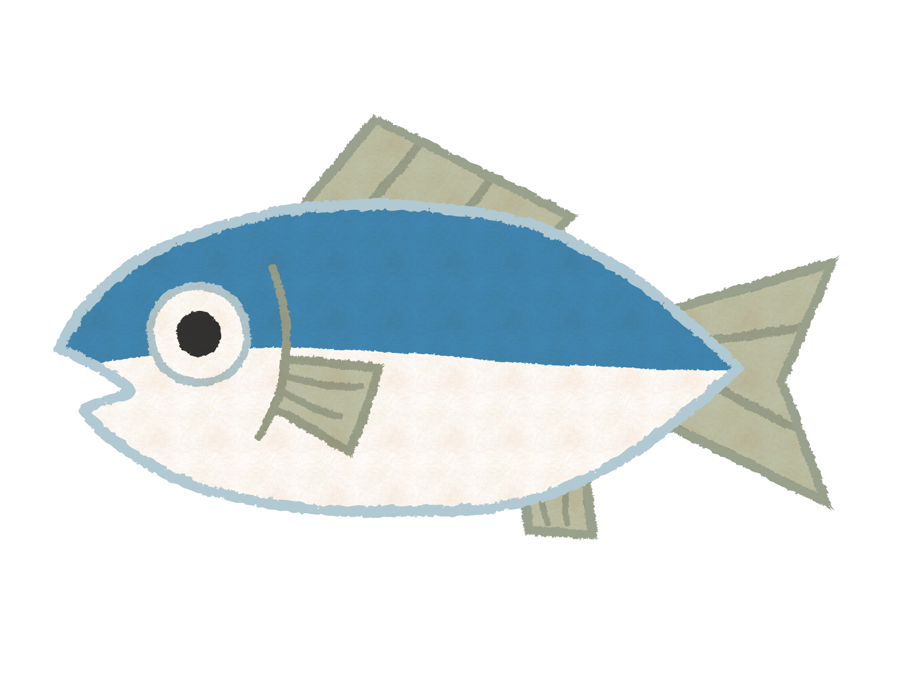
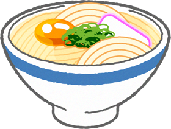
- うどん作り・米づくり・おにぎり 等（※ 内容は年度によって変わります。）
食作りに参加することで食べる事への興味が増し、美味しさもより一層感じられます。 - まぐろの解体ショー
自分たちが食べている魚。実際に調理されていく様子を見る事で食への感謝や“命”をいただくことの大切さを学びます。 -
リクエストメニュー
時には、みんなの大好きなメニューをリクエスト！ 好きなメニューが並びます。
年に何度か調理員さんも一緒に食事をする事で、より親近感もわき食べる楽しさにもつながっています。